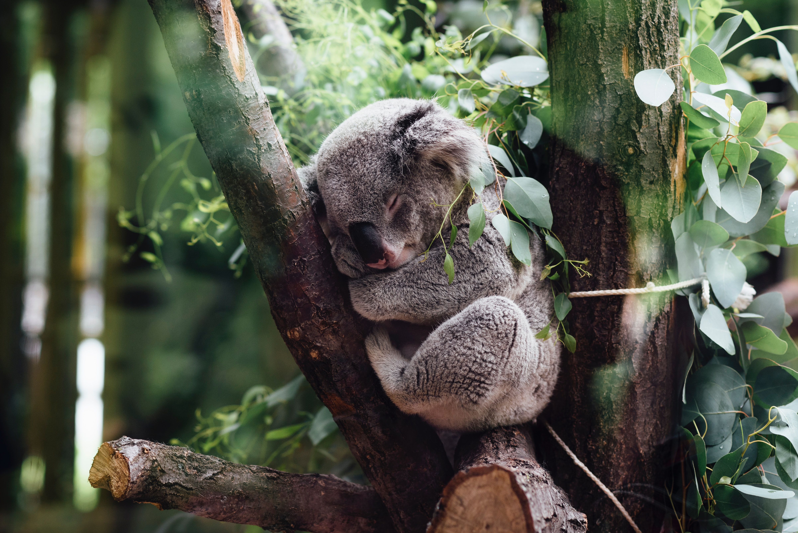

The koala or, inaccurately, koala bear[a] (Phascolarctos cinereus) is an arboreal herbivorous marsupial native to Australia. It is the only extant representative of the family Phascolarctidae and its closest living relatives are the wombats, which comprise the family Vombatidae. The koala is found in coastal areas of the mainland's eastern and southern regions, inhabiting Queensland, New South Wales, Victoria, and South Australia. It is easily recognisable by its stout, tailless body and large head with round, fluffy ears and large, spoon-shaped nose. The koala has a body length of 60–85 cm (24–33 in) and weighs 4–15 kg (9–33 lb). Fur colour ranges from silver grey to chocolate brown. Koalas from the northern populations are typically smaller and lighter in colour than their counterparts further south. These populations possibly are separate subspecies, but this is disputed.
Koalas eat mainly eucalyptus leaves (gum leaves). Occasionally they will eat the leaves from some other native Australian trees, and they also use certain trees just for resting in. Koalas live in tall open eucalypt (gum tree) forests. The areas of bushland where they like to live are called their HABITATS.